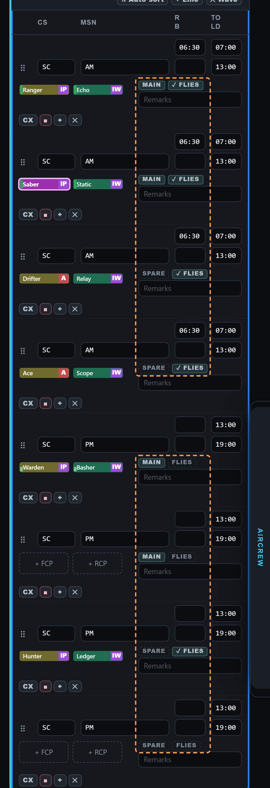
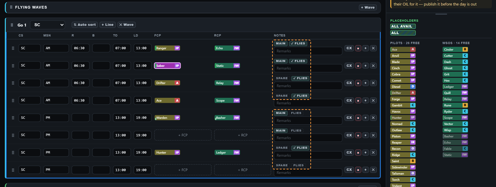
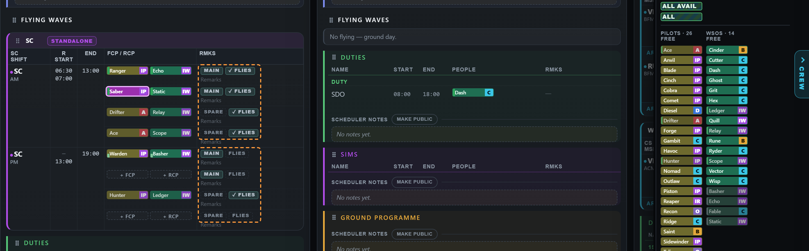

Standby Flies Tick
A Saturday with an SC wave. The AM shift has its R typed (06:30). The PM shift has nothing typed, and its spare Hunter and Ledger have been activated by hand. Everything inside the orange dashed box is new and drawn in. The rest is the real app as it is today.
What the tick does
- ✓ FLIES beside MAIN or SPARE: this row flies. It counts in the day's jets and Insights, earns OIL by default, gets every flying warning, and its day runs from the shift's START (or its R or B, if earlier) to its END.
- AM shift (R typed): every row lights by itself. It cannot be unticked. A row that does not come in gets its own CX.
- PM shift (nothing typed): each row shows a dashed FLIES. A tap lights that one row (Hunter's spare here); another tap takes it off. The other PM rows stay standby, as today.



New · A faint dash in empty R and B (SC, AVALON, BB)
Your idea, drawn on the real app. Every empty R and B box on a standby line shows a faint "–", in the same grey as the faint "Remarks" in an empty notes box. A typed time shows as today, and typing replaces the dash. Ordinary flying lines are not touched: their empty boxes keep the faint suggested time. The orange boxes mark the dashes. The week already shows this dash in an empty R today, so this makes the board match it.


Your four answers (recorded): yes, as recommended
- The look and the place. A small "✓ FLIES" chip beside MAIN or SPARE, as drawn, on the board and the week? Recommended: yes, as drawn.
- A hand tick lights one row, not the whole shift. Ticking Hunter lights only his row; the PM MAIN rows stay standby. Recommended: one row (your words: "a spare … is activated").
- An empty row on a shift with R typed. Say the AM shift has R typed but both SPARE rows are empty. Does the day read 2 jets or 4? Recommended: 2. A row with nobody on it does not count, because there is nobody to fly it. (Ordinary flying lines with nobody on them still count, as you ruled before.)
- View-only Sched and members. They see "✓ FLIES" on the rows that fly, read only; the dashed one is not shown to them. Recommended: yes.
Decided by me, from your rulings: on a published day a tick is a change like any other and goes out with the next amendment. A flying standby row gets no brief or debrief window, because it has no take-off. A BB line that flies with no START or END gets an amber line in the warning list, because its crew rest and OIL need those times.